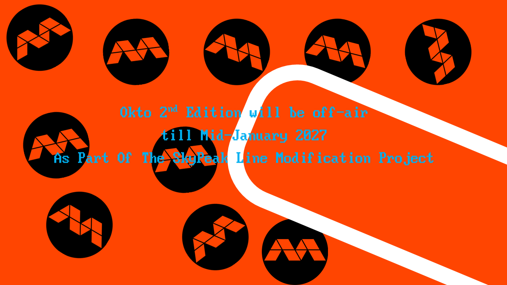
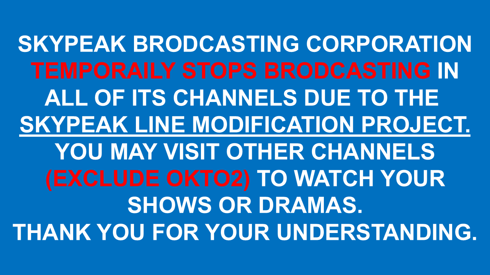

The SkyPeak Line has since been operating for 6 years (2020-2026) and a moving of the operator SkyPeak@ Bukit Batok Transporations to a new office at Choa Chu Kang Leads to a New Era of The Line.
This Operation is commenced when The Operator will close office, move out and Start a New Operator while the older ones get rebuilt. This is the 2nd operation. the operation code only happens when office houses will move the CEO Out of the current. This Operation is the similar one as "Moving 1" which was used on Commonwealth 16 Transportations. "Moving 1" was success in 2020-2021. The Entirety of the Operator has completed the rebuilt of Operations. Moving 2's Plans did not conclude the finalization as it was dissolved in 2025 The Reason of the dissolvation is that there is not enough Room for a new operator to take place of a new HDB as it could cause chaos throught the construction and rebuilt.
in December 2021 SkyPeak Line was closed for upgrading till 20 December The PSDs and Trains were diffrent as SkyPeak Line was modded to fix the current Fleet. The Original Trains (Commonwealth 16 Line NSEWL Fleets) were either scrapped or left abonded.
In 2025 it was confirmed that no operation of moving out and starting a new company. Instead a Study of modding SkyPeak Line commenced. this will mark the base story of SkyPeak Line Modification Project.
19 July 2026 The Study to Mod SkyPeak Line. Now Named SkyPeak Line Modification Project. Became Fesiable. The Project was announced in Okto 2nd Edition in 5 September 2026.
The SkyPeak Office moved out to 320 Clementi Ave 4. 2 days ago (25 September 2026) The SkyPeak Line Temporaily Closed from Operations
The Clousure of the Office led to all Active Operations Shut Down. The Servers Remained Operations and Microsoft SkyPeak still continue
Development on Both Microsoft Windows 94 and Trans-Island. SkyPeak Mediacorp went off-air on both Okto2 and SkyPeak Teletext.
Commonwealth 16 Transportations had everything Shut Down. Its Standalone TV Channel SBC 16 (owned by SkyPeak Brodcasting Corporation),
Commonwealth 16 Line (all stretches) and the entire Bus Operations temporaily closed and went off-air. The Servers were Shut Down in
20 October 2026 Respectively for upgrading.
The Updates of SKLMP will be in the below:
- Block 292B Station alignment confirmed
- New Station to Shortened SkyPeak Line Journeys by 70%
- New Station Coded as (SK4A/SK7A) Station Name not confirmed
- CML to have NEL URC751A Trains Announced
- OBS Brodcasts on Both Okto2 and SBC16 will switchover on April 2028 Fully
Updates Confirmed as of 28 Nov 2026.

The Information from Okto2 about SKLMP from 27 Sep 2026 - 20 Oct 2026

The Information from SBC about SKLMP (SBC16) from 27 Sep 2026 - 20 Oct 2026